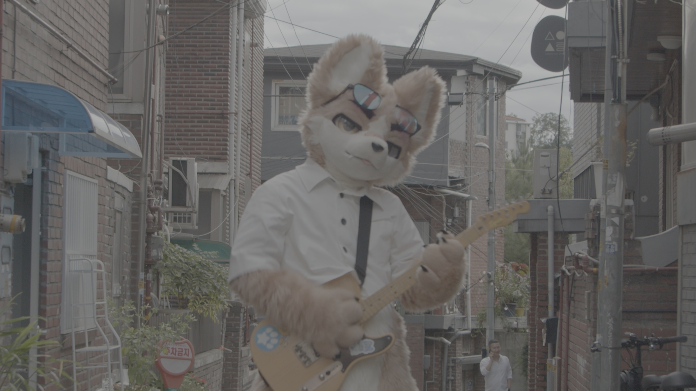
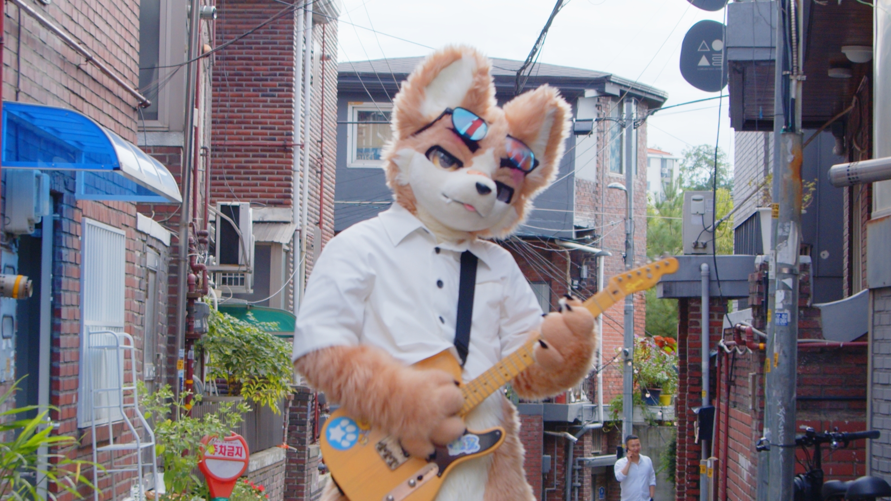
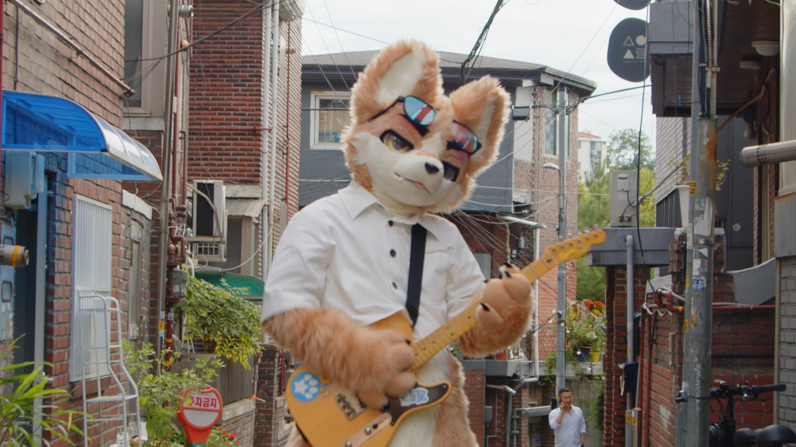
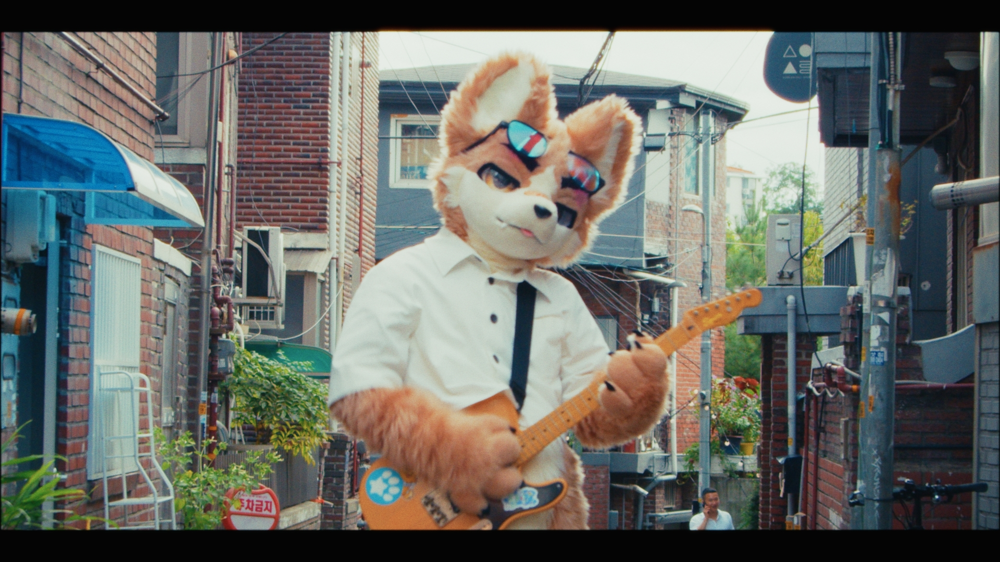
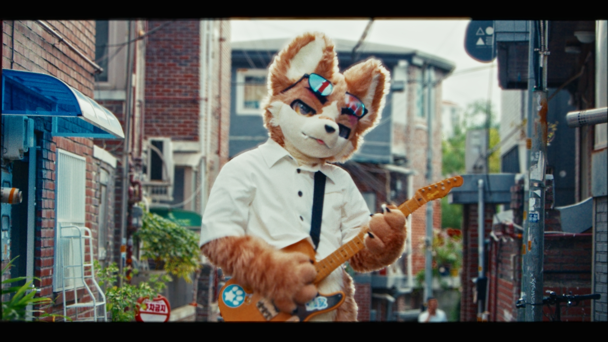

PROCESS
한 컷이 완성되는 순서
버튼을 눌러 같은 컷이 단계마다 어떻게 바뀌는지 확인해보세요. 원본에서 최종 납품본까지, 컬러 그레이딩은 보통 이 순서로 진행됩니다.
예시 01 · 캐릭터 촬영
STEP 01 · 원본





원본. 카메라가 기록한 로그 상태 그대로입니다. 색과 대비가 아직 눌려 있습니다.
예시 02 · 실내 행사 현장
STEP 01 · 원본


원본. 촬영 직후 로그/플랫 상태 그대로입니다. 노출과 화이트밸런스가 아직 정리되지 않았습니다.
예시 03 · 혼합광 환경
STEP 01 · 원본


원본. 촬영 직후 로그/플랫 상태 그대로입니다. 노출과 화이트밸런스가 아직 정리되지 않았습니다.